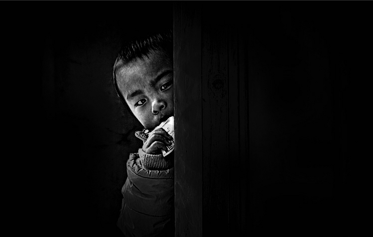

爱德基金会成立于1985年4月，旨在促进我国的教育、社会福利、医疗卫生、社区发展与环境保护、灾害管理等各项社会公益事业爱德基金会成立于1985年4月，旨在促进我国的教育、社会福利、医疗卫生、社区发展与环境保护、灾害管理等各项社会公益事业...
中国扶贫基金会成立于1989年，募集、接受海内外捐赠、扶贫开发、紧急救援、国际合作、培训交流、咨询服务中国扶贫基金会成立于1989年，募集、接受海内外捐赠、扶贫开发、紧急救援、国际合作、培训交流、咨询服务...
中国儿基会作为中国特色慈善事业的领路人和推动者，她以竭诚服务儿童少年教育福利事业、服务社会、服务大局为宗旨中国儿基会作为中国特色慈善事业的领路人和推动者，她以竭诚服务儿童少年教育福利事业、服务社会、服务大局为宗旨...
为给积极参与公益活动的爱心志愿者创造沟通交流的平台，我们要秉承“非牺牲的公益精神”让参与者为给积极参与公益活动的爱心志愿者创造沟通交流的平台，我们要秉承“非牺牲的公益精神”让参与者...
中国儿基会作为中国特色慈善事业的领路人和推动者，她以竭诚服务儿童少年教育福利事业、服务社会、服务大局为宗旨中国儿基会作为中国特色慈善事业的领路人和推动者，她以竭诚服务儿童少年教育福利事业、服务社会、服务大局为宗旨...
第五个国际自闭症关注日，壹基金携手腾讯公益慈善基金会、大福基金等机构首次在中国发起“蓝色行动——关注自闭症儿童”。第五个国际自闭症关注日，壹基金携手腾讯公益慈善基金会、大福基金等机构首次在中国发起“蓝色行动——关注自闭症儿童”。...